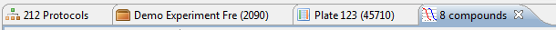

The workbench is the window that appears after logging in to Phaedra.

At the top, just below the title, is the Menu bar. Below the menu bar is the Toolbar, containing buttons to perform several common tasks.
Below the toolbar is the main area, where a number of views can be placed. By default, you will see two views: the Navigator and the Well Feature Selector. When new views are opened, they are usually displayed to the right, in the empty panel of the application.
At any time, you can resize a view by clicking and holding its border, and moving it to the desired size. Alternatively, you can click and hold the view's title tab to position it elsewhere in the workbench.
If the workbench becomes too crowded, you can return to the original layout by opening the Window menu in the menu bar, and selecting Reset Perspective.
While navigating through data in Phaedra, you will notice a number of views are placed on top of each other. At the top, the view titles are arranged like stacked tabs. This represents your navigation history: you can return to a previously visited object or list by selecting the corresponding tab.

You can close a tab by clicking on the cross button to the right of the tab's title. Alternatively, you can close all stacked tabs by right-clicking on any tab and selecting Close All.